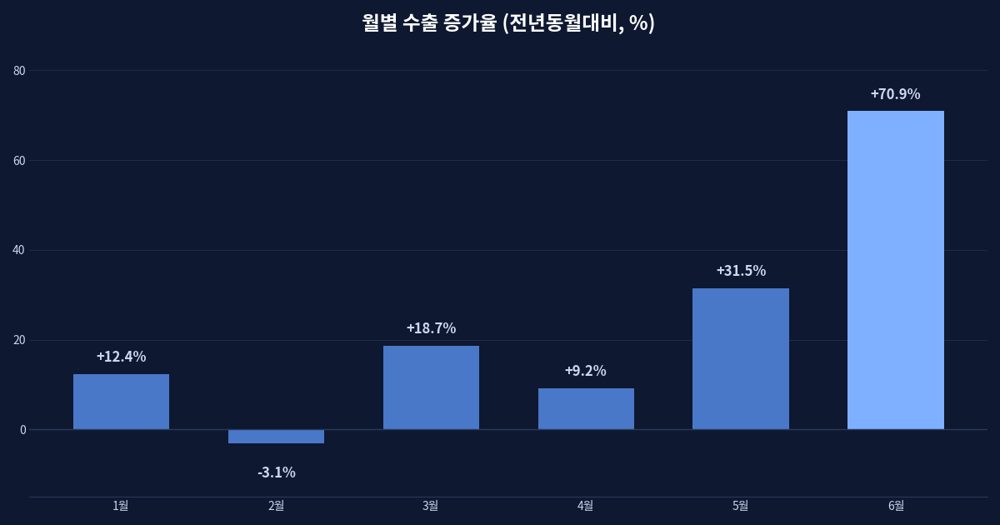
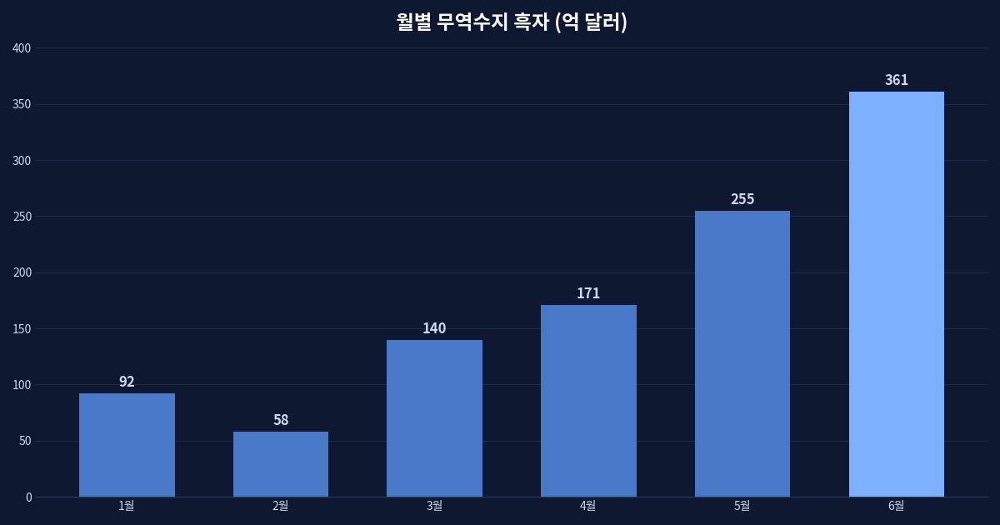
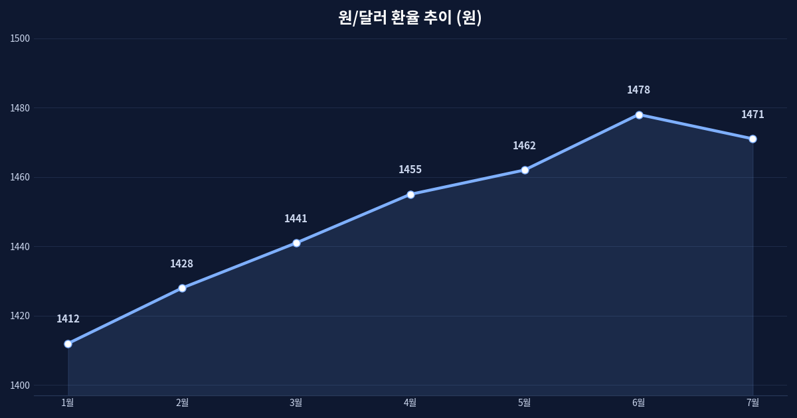
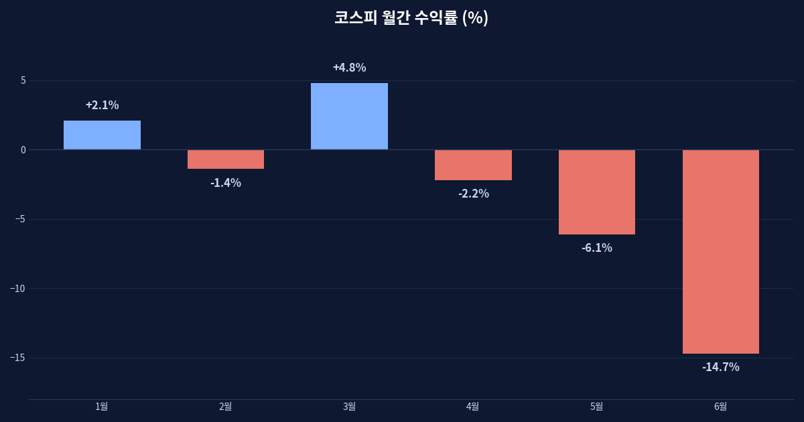

수출은 사상 최대인데 원화는 왜 약할까 — 흑자와 자본유출이 갈라선 여름

어긋난 두 개의 숫자
2026년 여름, 한국 경제는 얼핏 모순처럼 보이는 두 숫자를 동시에 내밀고 있다. 6월 수출은 반도체·컴퓨터·선박의 호조에 힘입어 전년 같은 달보다 크게 늘었고, 무역수지는 360억 달러가 넘는 큰 폭의 흑자를 기록했다. 나라 밖으로 파는 물건은 어느 때보다 많이 팔린다. 그런데 같은 시기 원·달러 환율은 1,400원대 후반에서 좀처럼 내려오지 않고, 코스피는 반도체 업종의 악재가 겹치며 월간 두 자릿수 하락을 겪었다.
상식적으로 수출이 잘되고 달러가 많이 들어오면 원화 가치는 올라가야(환율은 내려가야) 한다. 그런데 현실은 반대다. 나는 이 어긋남이야말로 지금 한국 경제를 이해하는 열쇠라고 생각한다. 답은 '무역'과 '자본'이 서로 다른 주머니에서 움직인다는 데 있다.

무역수지와 자본수지는 다른 주머니다
한 나라의 대외 거래는 크게 경상수지와 금융계정으로 나뉜다. 경상수지는 물건과 서비스를 사고팔아 남는 돈이고, 금융계정은 주식·채권·직접투자 같은 자본이 국경을 넘나드는 흐름이다. 무역으로 달러가 들어와도, 그보다 더 많은 자본이 밖으로 빠져나가면 원화는 약해진다.
실제로 올해 한국의 개인과 기관은 미국을 비롯한 해외 자산에 대한 투자를 크게 늘려 왔다. 국내 성장에 대한 기대가 약해지고, 반대로 해외의 이자와 배당이 매력적으로 보일 때 돈은 국경을 넘는다. 여기에 외국인 투자자마저 코스피에서 발을 빼면, 무역으로 번 달러는 자본 유출로 상쇄되고 만다. 벌어들인 달러가 통장을 스치듯 지나가는 셈이다.

강달러와 반도체 집중의 그림자
환율에는 우리 사정만 반영되는 게 아니다. 미국이 정책금리를 높은 수준에서 오래 유지하는 한, 달러는 전 세계 자금을 빨아들이는 강한 중력을 갖는다. 이자를 두둑이 주는 안전한 곳으로 돈이 모이는 것은 자연스러운 일이다. 원화만이 아니라 대부분의 신흥국 통화가 함께 눌린다.
문제는 한국 증시의 체질이다. 코스피는 반도체 몇 종목에 시가총액이 크게 쏠려 있다. 이 업종에 대한 전망이 흔들리면 지수 전체가 출렁이고, 외국인은 '한국을 판다'는 한 문장으로 반도체를 함께 던진다. 수출 호조를 이끄는 바로 그 업종이, 주가의 변동성을 키우는 급소가 되는 역설이다.
여기에는 최근의 지표도 힘을 보탠다. 2026년 상반기 내내 원·달러 환율은 완만하게 우상향해 7월에는 1,470원대에 이르렀고, 코스피는 6월 한 달 동안에만 두 자릿수의 하락률을 기록했다. 수출과 무역흑자가 사상 최대 수준에 이른 바로 그 시기에 통화와 증시는 오히려 뒷걸음질친 것이다. 이 괴리는 '펀더멘털이 좋으면 자산 가격도 오른다'는 단순한 믿음이 언제나 통하지는 않는다는 사실을 보여 준다.

유동성은 늘 편안한 곳으로 흐른다
거시를 볼 때 나는 '금리의 높낮이'보다 '돈이 어디로 편안함을 느끼는가'를 먼저 본다. 지금처럼 선진국 금리가 높게 굳어진 국면에서는, 위험을 무릅쓰지 않아도 현금성 자산으로 충분한 수익을 얻을 수 있다. 이때 유동성은 변동성 큰 신흥국 증시로 서둘러 몰려가지 않는다. 무역흑자라는 '실물의 성적표'와 자본유출이라는 '심리의 성적표'가 따로 노는 이유다.
지정학도 같은 지도 위에 있다. 공급망 재편과 관세, 자원의 무기화는 물가를 잘 안 내려가게 만들고, 그만큼 중앙은행의 손발을 묶는다. 긴축이 길어지면 강달러가 길어지고, 강달러가 길어지면 신흥국 통화의 약세도 길어진다. 오늘의 환율은 우리 무역 성적만이 아니라 세계 정치와 미국 금리의 함수이기도 하다.

개인에게 남는 질문
이 국면에서 개인이 던져야 할 질문은 '환율이 오를까 내릴까'라는 예측이 아니라, '나의 자산이 한 통화, 한 업종, 한 나라에 지나치게 쏠려 있지 않은가'라는 점검이라고 생각한다. 무역과 자본이 갈라져 움직인다는 사실 자체가, 하나의 지표만 보고 전체를 판단하면 안 된다는 경고이기 때문이다. 숫자 하나에 안심하거나 낙담하기 전에, 그 숫자가 어느 주머니의 이야기인지부터 물어야 한다.